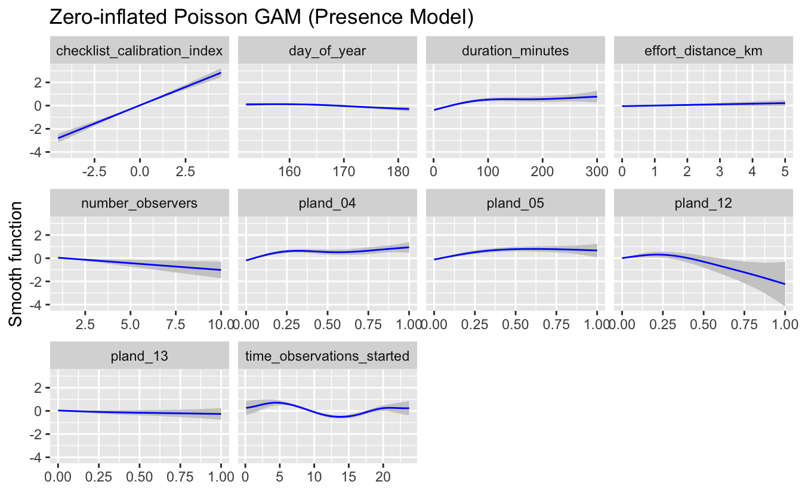
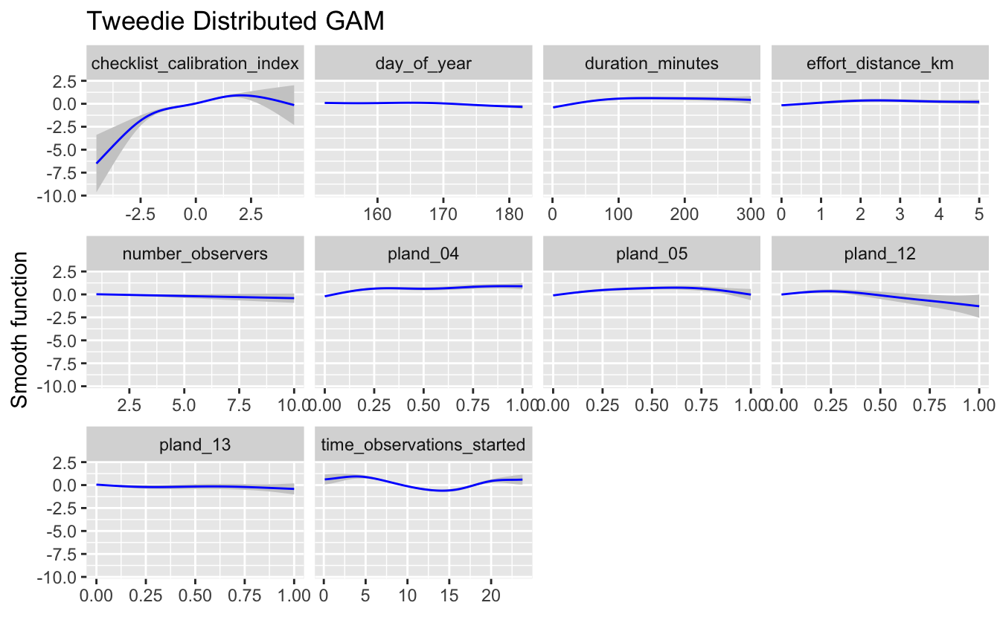
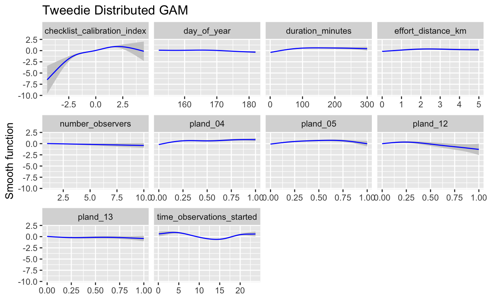

Chapter 6 Modeling Relative Abundance
6.1 Introduction
The previous two chapters focused on modeling occurrence. In Chapter 4, we modeled encounter rate (i.e. relative occupancy), then in Chapter 5 we modeled absolute occupancy, by explicitly accounting for detection probability. However, in addition to recording which species they observed, eBirders have the option of specifying how many individuals of each species were observed. So, in this chapter, we’ll take advantage of these counts to model relative abundance. The metric we are modelling for each species is the expected number of indivudals observed by an expert eBirder on a standard eBird checklist. Note that, as with encounter rate, because we’re not explicitly modeling the deteciton process, our estimates of abundance will be relative to absolute abundance.
We’ll start by reading in the data and spatiotemporally subsampling it to reduce bias. Next, we’ll fit models of relative abundance using Generalized Additive Models (GAM) with count as the response. We’ll test three different distributions for the response: zero-inflated Poisson, negative binomial, and Tweedie. The distribution of counts varies by species, season, and region, so it is difficult to predict which statistical distribution will be most appropriate. Running models with three different distributions gives us the opportunity to assess which of these fit the data best. We’ll use cross-validation to assess the performance of these models and help us choose which of the three is most suitable. Finally, we’ll make predictions of relative abundance throughout BCR 27 and produce a map of these predictions.
6.2 Data preparation
Let’s start by loading the necessary packages and data. If you haven’t already done so, you may want to download the data package and unzip it to your working directory. As in previous chapters, the Checklist Calibration Index (CCI) is an optional covariate in these models. If you’ve downloaded these data, put the CCI text file in the data/ subdirectory of your project. If you haven’t downloaded these data, you can proceed with all the other code, but your maps may have some differences to those shown here.
Because we’re modeling abundance in this chapter, we’ll remove any records for which the observer reported that Wood Thrush was present, but didn’t report a count of the number of species (coded as ‘X’ records in the eBird database). We’ll also add a day of year variable (1-365) that will be useful as a covariates in the abundance models.
library(lubridate)
library(sf)
library(raster)
library(dggridR)
library(pdp)
library(edarf)
library(mgcv)
library(fitdistrplus)
library(viridis)
library(fields)
library(tidyverse)
# resolve namespace conflicts
select <- dplyr::select
map <- purrr::map
projection <- raster::projection
set.seed(1)
# ebird data
ebird <- read_csv("data/ebd_woothr_june_bcr27_zf.csv") %>%
mutate(year = year(observation_date),
day_of_year = yday(observation_date),
protocol_type = factor(protocol_type,
levels = c("Stationary" , "Traveling"))) %>%
# remove observations with no count
filter(!is.na(observation_count))
# modis habitat covariates
habitat <- read_csv("data/modis_pland_location-year.csv") %>%
mutate(year = as.integer(year))
# combine ebird and habitat data
ebird_habitat <- inner_join(ebird, habitat, by = c("locality_id", "year"))
# optional checklist calibration index
cci_file <- "data/cci_june_bcr27.csv"
if (file.exists(cci_file)) {
cci <- read_csv(cci_file)
ebird_habitat <- inner_join(ebird_habitat, cci, by = "checklist_id") %>%
filter(!is.na(checklist_calibration_index))
}
# prediction surface
pred_surface <- read_csv("data/modis_pland_prediction-surface.csv")
r <- raster("data/prediction-surface.tif")
# load agid data for making maps
map_proj <- st_crs(102003)
ne_land <- read_sf("data/gis-data.gpkg", "ne_land") %>%
st_transform(crs = map_proj) %>%
st_geometry()
bcr <- read_sf("data/gis-data.gpkg", "bcr") %>%
st_transform(crs = map_proj) %>%
st_geometry()
ne_country_lines <- read_sf("data/gis-data.gpkg", "ne_country_lines") %>%
st_transform(crs = map_proj) %>%
st_geometry()
ne_state_lines <- read_sf("data/gis-data.gpkg", "ne_state_lines") %>%
st_transform(crs = map_proj) %>%
st_geometry()6.2.1 Spatiotemporal subsampling
As discussed in Section 4.3, spatiotemporal subsampling detection and non-detection observations reduces spatial and temporal bias and the class imbalance. We’ll use exactly the same hexagonal subsampling approach as in Chapter 4.
# generate hexagonal grid with ~ 5 km betweeen cells
dggs <- dgconstruct(spacing = 5)
# get hexagonal cell id and week number for each checklist
checklist_cell <- ebird_habitat %>%
mutate(cell = dgGEO_to_SEQNUM(dggs, longitude, latitude)$seqnum,
week = week(observation_date))
# sample one checklist per grid cell per week
# sample detection/non-detection independently
ebird_ss <- checklist_cell %>%
group_by(species_observed, week, cell) %>%
sample_n(size = 1) %>%
ungroup() %>%
select(-cell, -week)6.2.2 Test-train split
Before we fit the abundance models, we randomly split the data into 80% of checklists for training and 20% for testing. We’ll hold this 20% aside when we fit the model, then use it as an independent data set to test the predictive performance of the model. Here we select a random 20% of the data, but there are a variety of strategies to select data for testing that may be appropriate in different situations. At this stage, we’ll also select only the variables that we’ll use as covariates in the models. In particular, we’ll use the full suite of effort covariates and the same four habitat covariates we used in Chapter 5. Known wood thrush nesting habitats are deciduous broadleaf forest (pland_04) and mixed forest (pland_05). Habitats they are thought to avoid are croplands (pland_12) and urban (pland_13). The specific set of habit covariates you use will be specific for your species and should be informed by a priori ecological knowledge of the species. See Section 3.1 for a list of the habitat covariates available here.
hab_covs <- c(
# % deciduous forest
"pland_04",
# % mixed forest
"pland_05",
# % cropland
"pland_12",
# % urban
"pland_13")
ebird_split <- ebird_ss %>%
# select only the columns to be used in the model
select(observation_count,
# effort covariates
day_of_year, time_observations_started, duration_minutes,
effort_distance_km, number_observers, protocol_type,
contains("checklist_calibration_index"),
# habitat covariates
hab_covs)
# split 80/20
ebird_split <- ebird_split %>%
split(if_else(runif(nrow(.)) <= 0.8, "train", "test"))
map_int(ebird_split, nrow)
#> test train
#> 2072 83096.3 Abundance models
Before we embark on modelling the counts, we’ll start by examining the distribution of the count data. This will give us an idea of which distributions may be appropriate for the counts of this species. We’re looking to assess whether the data fall neatly into known distributions and whether they show evidence of zero-inflation. We look at the distribution of counts both with all the zeros and without the zeros. eBird data often have a very high number of zero counts, as even common bird species are not seen on every checklist.
The skewness and kurtosis describe aspects of the shape of distributions. A Cullen & Frey graph shows the possible ranges of skewness and kurtosis for a variety of distributions. These plots show where the species count data fall in relation to a variety of distributions. This indicates which distributions may be most appropriate. By also examining the distribution for just the counts (without zeros), we get an indication of whether a zero-inflated distribution may be appropriate.
par(mfrow = c(2, 2))
# counts with zeros
hist(ebird_ss$observation_count, main = "Histogram of counts")
descdist(ebird_ss$observation_count, discrete = TRUE)
#> summary statistics
#> ------
#> min: 0 max: 21
#> median: 0
#> mean: 0.175
#> estimated sd: 0.657
#> estimated skewness: 8.89
#> estimated kurtosis: 163
# counts without zeros
pos_counts <- keep(ebird_ss$observation_count, ~ . > 0)
hist(pos_counts, main = "Histogram of counts > 0")
descdist(pos_counts, discrete = TRUE)
#> summary statistics
#> ------
#> min: 1 max: 21
#> median: 1
#> mean: 1.54
#> estimated sd: 1.3
#> estimated skewness: 5.83
#> estimated kurtosis: 61.6
For the data that include zeros (top row), the wood thrush shows an extremely zero-inflated and skewed distribution. There are a large number of zero-counts (checklists with no wood thrush detections). The Cullen & Frey graph shows that the observed distribution of counts including zeros (the blue dot) is far from the normal, poisson and negative binomial distributions. It is closest to the negative binomial distribution.
For the counts only (bottom row), the wood thrush data still show a highly skewed distribution, with lots of checklists with low numbers and only a few checklists with >5 woodthrush. The Cullen & Frey graph indicates that even without zeros the data are far from complying with a standard distribution.
These plots and conclusions are only indicative - they provide some information about what we can expect for distributions at the next step. Overall for wood thrush we can conclude that the counts are highly skewed with many zero observations.
Prior to fitting our GAM models, let’s construct the model formula that we’ll use when we call the fitting function. As this is a GAM, for each variable, we’ll need to define the parameters of the smoothing function used. In particular, for each of the continuous covariates we’ll use a thin plate spline smooth with four degrees of freedom (k = 5). The degrees of freedom describe the maximum number of basis functions that contribute to the final smooth spline. In general across a variety of splines the degrees of freedom relate to the ‘wiggliness’ of the smooth function. Higher degrees of freedom will lead to a more wiggly and flexible function. The one variable with a different smooth is checklist start time, which is a cyclic variable (i.e. 0 and 24 are both midnight), so we’ll use a cubic cyclic spline (bs = "cc") with six degrees of freedom (k = 7). The degrees of freedom selected define the maximum wiggliness and the gam function automatically reduces the degrees of freedom used if the data do not show evidence of a complex relationship. We recommend that users assess the fitted relationships to see whether they show biologically plausible relationships between variables and species counts. Splines can sometimes overfit and in these cases it would be appropriate to reduce the degrees of freedom.
GAMs are complex and powerful models, but assessing their fit and adapting them accordingly is sometimes more of an art than a science. We recommend people using these functions for their own models consult with a statistician or someone with experience in quantitative modelling.
# gam parameters
# degrees of freedom for smoothing
k <- 5
# degrees of freedom for cyclic time of day smooth
k_time <- 7
# continuous predictors
# hold out time to treat seperately since it's cyclic
continuous_covs <- ebird_split$train %>%
select(-observation_count, -protocol_type, -time_observations_started) %>%
names()
# create model formula for predictors
gam_formula_rhs <- str_glue("s({var}, k = {k})",
var = continuous_covs, k = k) %>%
str_flatten(collapse = " + ") %>%
str_glue(" ~ ", .,
" + protocol_type + ",
"s(time_observations_started, bs = \"cc\", k = {k})",
k = k_time) %>%
as.formula()
# model formula including response
gam_formula <- update.formula(observation_count ~ ., gam_formula_rhs)
gam_formula
#> observation_count ~ s(day_of_year, k = 5) + s(duration_minutes,
#> k = 5) + s(effort_distance_km, k = 5) + s(number_observers,
#> k = 5) + s(checklist_calibration_index, k = 5) + s(pland_04,
#> k = 5) + s(pland_05, k = 5) + s(pland_12, k = 5) + s(pland_13,
#> k = 5) + protocol_type + s(time_observations_started, bs = "cc",
#> k = 7)Now we’ll use this formula to fit GAM models, testing the following three distributions for the counts:
Zero-inflated Poisson: This distribution effectively fits the data in two parts: (1) a binomial model that determines the variables associated with species presence and (2) a Poisson count model for those places with species presence, that determines the variables associated with species count. This is an effective distribution when there are a large number of zero counts in the data and the positive counts approximate a Poisson distribution.
Negative binomial: The negative binomial distribution is related to the Poisson distribution. However, the Poisson distribution has the variance of the distribution equal to the mean. With the negative binomial the variance can be considerably different to the mean. This distribution is appropriate for over-dispersed data when the variance is much larger than the mean. This is a common pattern in ecological count data.
Tweedie distribution: Tweedie provides the most flexibility as it encompasses a wide variety of distributions, including those with extremely high variance relative to the mean and extreme over-dispersion. The Tweedie is a general family of probability distributions which includes many more typical distributions: normal, gamma and Poisson.
# explicitly specify where the knots should occur for time_observations_started
# this ensures that the cyclic spline joins the variable at midnight
# this won't happen by default if there are no data near midnight
time_knots <- list(time_observations_started = seq(0, 24, length.out = k_time))
# zero-inflated poisson
m_ziplss <- gam(list(gam_formula, # count model
gam_formula_rhs), # presence model
data = ebird_split$train,
family = "ziplss",
knots = time_knots)
# negative binomial
m_nb <- gam(gam_formula,
data = ebird_split$train,
family = "nb",
knots = time_knots)
# tweedie distribution
m_tw <- gam(gam_formula,
data = ebird_split$train,
family = "tw",
knots = time_knots)6.3.1 Validation
Before we use formal cross validation to assess these models, let’s visualize the results to see if they appear biologically feasible. Calling plot() on the fitted GAM objects produces plots of the smooth functions for each of the predictors, which gives us a sense of the effect of each predictor on the count response. Unfortunately, for large numbers of predictors, plot() doesn’t work well. Instead, we write a function to capture the data behind the plotting function, then plot it using ggplot2 instead.
# ggplot function
plot_gam <- function(m, title = NULL, ziplss = c("presence", "abundance")) {
# capture plot
tmp <- tempfile()
png(tmp)
p <- plot(m, pages = 1)
dev.off()
unlink(tmp)
# drop addition models in ziplss
if (m$family$family == "ziplss") {
is_presence <- map_lgl(p, ~ str_detect(.$ylab, "^s\\.1"))
if (ziplss == "presence") {
p <- p[is_presence]
} else {
p <- p[!is_presence]
}
}
# extract data
p_df <- map_df(p, ~ tibble(cov = rep(.$xlab, length(.$x)),
x = .$x, fit = .$fit, se = .$se))
# plot
g <- ggplot(p_df) +
aes(x = x, y = fit,
ymin = fit - se, ymax = fit + se) +
geom_ribbon(fill = "grey80") +
geom_line(col = "blue") +
facet_wrap(~ cov, scales = "free_x") +
labs(x = NULL,
y = "Smooth function",
title = title)
print(g)
invisible(p_df)
}
plot_gam(m_ziplss,
title = "Zero-inflated Poisson GAM (Presence Model)",
ziplss = "presence")
plot_gam(m_ziplss,
title = "Zero-inflated Poisson GAM (Abundance Model)",
ziplss = "abundance")
plot_gam(m_nb, title = "Negative Binomial GAM")
plot_gam(m_tw, title = "Tweedie Distributed GAM")
 

If these relationships seem too wiggly to be biologically realistic, you should reduce the degrees of freedom for the smooth until a biologically feasible relationship is achieved. In this case, the relationships appear to be reasonable. Next we’ll proceed with a formal cross-validation of the three models. Recall from Section 4.3.2 that this involves making predictions for the test dataset, which wasn’t used to fit the models, then assessing how well these predictions relate to the actual observed counts.
Care needs to be taken when making predictions from the zero-inflated Poisson model since it has two components: the probability of presence and expected count given presence. As a result, the predict() function returns a two column matrix with the count and probability respectively, both on the scale of the link functions. So, we need to back-transform these values, then multiply them to get the expected count.
obs_count <- select(ebird_split$test, obs = observation_count)
# presence probability is on the complimentary log-log scale
# we can get the inverse link function with
inv_link <- binomial(link = "cloglog")$linkinv
# count is on the log scale
m_ziplss_pred <- predict(m_ziplss, ebird_split$test, type = "link") %>%
as.data.frame() %>%
transmute(family = "Zero-inflated Poisson",
pred = inv_link(V2) * exp(V1)) %>%
bind_cols(obs_count)
m_nb_pred <- predict(m_nb, ebird_split$test, type = "response") %>%
tibble(family = "Negative Binomial", pred = .) %>%
bind_cols(obs_count)
m_tw_pred <- predict(m_tw, ebird_split$test, type = "response") %>%
tibble(family = "Tweedie", pred = .) %>%
bind_cols(obs_count)
# combine predictions
test_pred <- bind_rows(m_ziplss_pred, m_nb_pred, m_tw_pred) %>%
mutate(family = as_factor(family))Let’s look at a plot of how these predictions compare to the observed counts. Assessing the fit of the models depends considerably on the goals of the model and the most important aspects of the model fit. Here we assume that underestimated abundances are more problematic than overestimated abundances, but model fit assessment should be tailored to the particular goals of an estimated species distribution. We’ll highlight in red on these plots the regions where the predictions are underestimated by more than an order of magnitude. We’ll also overlay the line \(y = x\), which separates overestimates (above the line) from underestimates (below the line), and a blue smoothed fit showing the general trend through all the data.
# plot predicted vs. observed
ticks <- c(0, 1, 10, 100, 1000)
mx <- round(max(test_pred$obs))
ggplot(test_pred) +
aes(x = log10(obs + 1),
y = log10(pred + 1)) +
geom_jitter(alpha = 0.2, height = 0) +
# y = x line
geom_abline(slope = 1, intercept = 0, alpha = 0.5) +
# area where counts off by a factor of 10
geom_area(data = tibble(x = log10(seq(0, mx - 1) + 1),
y = log10(seq(0, mx - 1) / 10 + 1)),
mapping = aes(x = x, y = y),
fill = "red", alpha = 0.2) +
# loess fit
geom_smooth(method = "loess",
method.args = list(span = 2 / 3, degree = 1)) +
scale_x_continuous(breaks = log10(ticks + 1), labels = ticks) +
scale_y_continuous(breaks = log10(ticks + 1), labels = ticks) +
labs(x = "Observed count",
y = "Predicted count") +
facet_wrap(~ family, nrow = 1)
We see that most of the observed counts are underestimated by the predictions, as most points and the blue line are below the gray y=x line. We also see that most of the checklists observe no wood thrush. Although most predictions for these are also zero (blue line is at 0), there are still a lot of places with predicted Wood Thrush where none were observed. There are also a large number of observations in that problematic region of underestimation by an order of magnitude or more. How many of these cases are there?
test_pred %>%
group_by(family) %>%
summarize(n = sum(obs / pred > 10),
pct = mean(obs / pred > 10))
#> # A tibble: 3 x 3
#> family n pct
#> <fct> <int> <dbl>
#> 1 Zero-inflated Poisson 131 0.0632
#> 2 Negative Binomial 67 0.0323
#> 3 Tweedie 70 0.0338It appears based on this metric, that the zero-inflated Poisson model is performing worst in terms of underestimation. Let’s examine some of the cross-validation metrics: deviance explained, mean-squared error (MSE), and Spearman’s rank correlation.
# deviance explained
de <- c(summary(m_ziplss)$dev.expl,
summary(m_nb)$dev.expl,
summary(m_tw)$dev.expl)
# mse and rank correlation
gam_assessment <- test_pred %>%
group_by(family) %>%
summarise(mse = mean((obs - pred)^2, na.rm = TRUE),
rank_cor = cor.test(obs, pred,
method = "spearman",
exact = FALSE)$estimate) %>%
ungroup() %>%
mutate(dev_exp = de)| family | mse | rank_cor | dev_exp |
|---|---|---|---|
| Zero-inflated Poisson | 0.373 | 0.252 | 0.164 |
| Negative Binomial | 0.372 | 0.275 | 0.254 |
| Tweedie | 0.365 | 0.271 | 0.232 |
The zero-inflated Poisson model performs the worst across all metrics: it has the largest number of problematic errors, the highest MSE, and the lowest values for both rank correlation and deviance explained. The negative binomial and Tweedie models are more similarly in performance. The negative binomial model has slightly more problematic errors and higher MSE, but it performs slightly better in terms of deviance explained and rank correlation. Either model could be chosen; however, it appears visually that predictions from the negative binomial model tend to be a bit higher, and closer to the \(y = x\) line, than predictions from the Tweedie model. So, taking a holistic view, the negative binomial model appears to be the best choice in this scenario. Depending on your focal species and region, as well as the particular goals of your analysis, some aspects of model fit will be more important than others, and you may find that a different model is most suitable for your situation.
Overall, we see that none of these models has a high deviance explained. So a large degree of the variation in wood thrush counts on checklists are not explained by the variables in this model. It is important to hold this in mind when we use results from this model and produce predicted maps.
In this case we select the negative binomial as the best model from these three options.
pred_model <- m_nb6.4 Prediction
Now that we’ve selected the negative binomial GAM, we can use this model to map Wood Thrush relative abundance in BCR 27! In Section 3.4, we created a prediction surface consisting of the PLAND habitat covariates summarized on a regular grid of points across BCR 27. In this section, we’ll make predictions of relative abundance at these points. However, first we need to bring effort variables into this prediction surface. We’ll use a standard eBird checklist: a 1 km, 1 hour traveling count done by a single observer expert eBirder (CCI = 2) at the peak time of day for detecting this this species. To determine this peak time, we’ll predict abundance and its 95% confidence limits at a series of times throughout the day, then pick the time at which the lower confidence limit is at its maximum. By using the lower confidence limits, we select a time that we are confident has high detectability and buffer against edge effects where there are few data points.
# create a dataframe of covariates with a range of start times
seq_tod <- seq(0, 24, length.out = 300)
tod_df <- ebird_split$train %>%
# find average pland habitat covariates
select(starts_with("pland")) %>%
summarize_all(mean, na.rm = TRUE) %>%
ungroup() %>%
# use standard checklist
mutate(day_of_year = yday(ymd("2016-06-15")),
duration_minutes = 60,
effort_distance_km = 1,
number_observers = 1,
checklist_calibration_index = 2,
protocol_type = "Traveling") %>%
cbind(time_observations_started = seq_tod)
# predict at different start times
pred_tod <- predict(pred_model, newdata = tod_df,
type = "link",
se.fit = TRUE) %>%
as_tibble() %>%
# calculate backtransformed confidence limits
transmute(time_observations_started = seq_tod,
pred = pred_model$family$linkinv(fit),
pred_lcl = pred_model$family$linkinv(fit - 1.96 * se.fit),
pred_ucl = pred_model$family$linkinv(fit + 1.96 * se.fit))
# find optimal time of day
t_peak <- pred_tod$time_observations_started[which.max(pred_tod$pred_lcl)]
# plot the partial dependence plot
ggplot(pred_tod) +
aes(x = time_observations_started, y = pred,
ymin = pred_lcl, ymax = pred_ucl) +
geom_ribbon(fill = "grey80", alpha = 0.5) +
geom_line() +
geom_vline(xintercept = t_peak, color = "blue", linetype = "dashed") +
labs(x = "Hours since midnight",
y = "Predicted relative abundance",
title = "Effect of observation start time on Wood Thrush reporting",
subtitle = "Peak detectability shown as dashed blue line")
So, the peak time of day for detecting Wood Thrush is around 4:15 AM Let’s generate the prediction surface and make predictions at all the points. In addition to relative abundance, we’ll estimate standard error and 95% confidence limits.
# add effort covariates to prediction surface
pred_surface_eff <- pred_surface %>%
mutate(day_of_year = yday(ymd("2017-06-15")),
time_observations_started = t_peak,
duration_minutes = 60,
effort_distance_km = 1,
number_observers = 1,
checklist_calibration_index = 2,
protocol_type = "Traveling")
# predict
pred <- predict(pred_model, newdata = pred_surface_eff,
type = "link",
se.fit = TRUE) %>%
as_tibble() %>%
# calculate confidence limits and back transform
transmute(abd = pred_model$family$linkinv(fit),
abd_se = pred_model$family$linkinv(se.fit),
abd_lcl = pred_model$family$linkinv(fit - 1.96 * se.fit),
abd_ucl = pred_model$family$linkinv(fit + 1.96 * se.fit)) %>%
# add to prediction surface
bind_cols(pred_surface_eff, .) %>%
select(latitude, longitude, abd, abd_se, abd_lcl, abd_ucl)Next, we’ll convert this data frame to spatial points using sf, then rasterize the points using the prediction surface raster template.
r_pred <- pred %>%
st_as_sf(coords = c("longitude", "latitude"), crs = 4326) %>%
select(abd, abd_se) %>%
st_transform(crs = projection(r)) %>%
rasterize(r)
r_pred <- r_pred[[-1]]
# save the rasters
writeRaster(r_pred[["abd"]],
filename = "output/abundance-model_abundance_woothr.tif",
overwrite = TRUE)
writeRaster(r_pred[["abd_se"]],
filename = "output/abundance-model_se_woothr.tif",
overwrite = TRUE)Finally, let’s make a map! For the relative abundance map, we’ll treat very small values of relative abundance as zero.
The values shown on this map are the expected number of Wood Thrush seen by an expert eBirder conducting a 1-hour, 1-km checklist at about 4:15 AM As detectability is not perfect, we expect true Wood Thrush abundance to be higher than these values, but without estimating detectability it is difficult to say how much higher. Also remember at this point that there was a lot of variation in eBird counts that were not explained by our covariates. So this map shows the best estimate of relative abundance, given the model and variables selected for modeling.
# any expected abundances below this threshold are set to zero
zero_threshold <- 0.05
# project predictions
r_pred_proj <- projectRaster(r_pred, crs = map_proj$proj4string, method = "ngb")
par(mfrow = c(2, 1))
for (nm in names(r_pred)) {
r_plot <- r_pred_proj[[nm]]
par(mar = c(3.5, 0.25, 0.25, 0.25))
# set up plot area
plot(bcr, col = NA, border = NA)
plot(ne_land, col = "#dddddd", border = "#888888", lwd = 0.5, add = TRUE)
# modified plasma palette
plasma_rev <- rev(plasma(25, end = 0.9))
gray_int <- colorRampPalette(c("#dddddd", plasma_rev[1]))
pal <- c(gray_int(4)[2], plasma_rev)
# abundance vs. se
if (nm == "abd") {
title <- "Wood Thrush Relative Abundance"
# set very low values to zero
r_plot[r_plot <= zero_threshold] <- NA
# log transform
r_plot <- log10(r_plot)
# breaks and legend
mx <- ceiling(100 * cellStats(r_plot, max)) / 100
mn <- floor(100 * cellStats(r_plot, min)) / 100
brks <- seq(mn, mx, length.out = length(pal) + 1)
lbl_brks <- sort(c(-2:2, mn, mx))
lbls <- round(10^lbl_brks, 2)
} else {
title <- "Wood Thrush Abundance Uncertainty (SE)"
# breaks and legend
mx <- ceiling(1000 * cellStats(r_plot, max)) / 1000
mn <- floor(1000 * cellStats(r_plot, min)) / 1000
brks <- seq(mn, mx, length.out = length(pal) + 1)
lbl_brks <- seq(mn, mx, length.out = 5)
lbls <- round(lbl_brks, 2)
}
# abundance
plot(r_plot,
col = pal, breaks = brks,
maxpixels = ncell(r_plot),
legend = FALSE, add = TRUE)
# borders
plot(bcr, border = "#000000", col = NA, lwd = 1, add = TRUE)
plot(ne_state_lines, col = "#ffffff", lwd = 0.75, add = TRUE)
plot(ne_country_lines, col = "#ffffff", lwd = 1.5, add = TRUE)
box()
# legend
par(new = TRUE, mar = c(0, 0, 0, 0))
image.plot(zlim = range(brks), legend.only = TRUE, col = pal,
smallplot = c(0.25, 0.75, 0.06, 0.09),
horizontal = TRUE,
axis.args = list(at = lbl_brks,
labels = lbls,
fg = "black", col.axis = "black",
cex.axis = 0.75, lwd.ticks = 0.5,
padj = -1.5),
legend.args = list(text = title,
side = 3, col = "black",
cex = 1, line = 0))
}